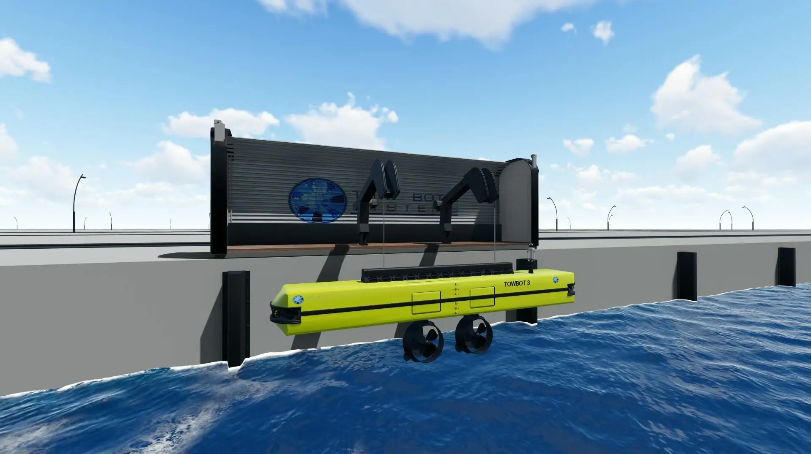

Hull interface
Temporary attachment and controlled release, engineered for compatible surface condition, curvature and load case.
Integrated marine robotics
Towbot brings together the hull interface, load path, propulsion, energy, sensors, communications, operator control and safety logic in one detachable platform.
Temporary attachment and controlled release, engineered for compatible surface condition, curvature and load case.
Twin electric manoeuvring propulsors with directional control configured around the vessel and required force.
Battery, BMS, distribution, thermal and ingress protection, with charging strategy matched to service demand.
Cameras, lighting, navigation sensors, position information, equipment health and operational logging.
Authenticated command links, restricted access and defined degraded or loss-of-link behaviour.
Operator HMI, emergency stop, assisted functions and autonomous capability bounded by deterministic safe states.
Patented foundation
Built on patented technology and continuing marine-engineering innovation.

Start with the operating problem
Share the vessel type, manoeuvre, location and present tug or positioning arrangement. We will scope an initial application assessment and the information needed for a credible business case.
Request an application assessment ↗